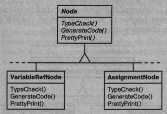
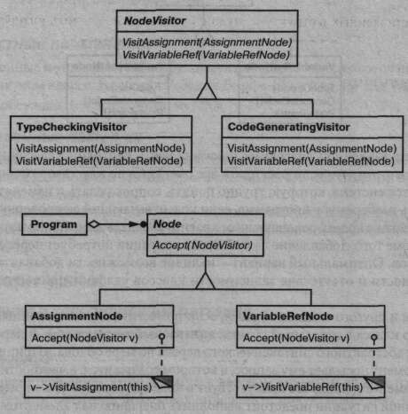
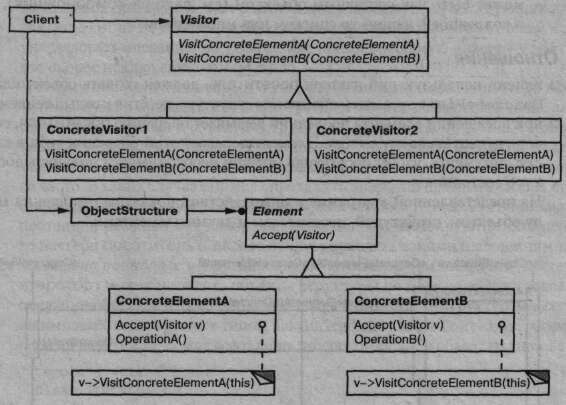
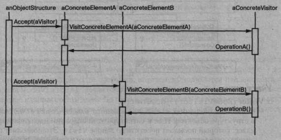

Название и классификация паттерна
Посетитель - паттерн поведения объектов.
Назначение
Описывает операцию, выполняемую с каждым объектом из некоторой структуры. Паттерн посетитель позволяет определить новую операцию, не изменяя классы этих объектов.
Мотивация
Рассмотрим компилятор, который представляет программу в виде абстрактного синтаксического дерева. Над такими деревьями он должен выполнять операции «статического семантического» анализа, например проверять, что все переменные определены. Еще ему нужно генерировать код. Аналогично можно было бы определить операции контроля типов, оптимизации кода, анализа потока выполнения, проверки того, что каждой переменной было присвоено конкретное значение перед первым использованием, и т.д. Более того, абстрактные синтаксические деревья могли бы служить для красивой печати программы, реструктурирования кода и вычисления различных метрик программы.
В большинстве таких операций узлы дерева, представляющие операторы присваивания, следует рассматривать иначе, чем узлы, представляющие переменные и арифметические выражения. Поэтому один класс будет создан для операторов присваивания, другой - для доступа к переменным, третий - для арифметических выражений и т.д. Набор классов узлов, конечно, зависит от компилируемого языка, но не очень сильно.
На представленной диаграмме показана часть иерархии классов Node. Проблема здесь в том, что если раскидать все операции по классам различных узлов, то получится система, которую трудно понять, сопровождать и изменять. Вряд ли кто-нибудь разберется в программе, если код, отвечающий за проверку типов, будет перемешан с кодом, реализующим красивую печать или анализ потока выполнения. Кроме того, добавление любой новой операции потребует перекомпиляции всех классов. Оптимальный вариант - наличие возможности добавлять операции по отдельности и отсутствие зависимости классов узлов от применяемых к ним операций.
И того, и другого можно добиться, если поместить взаимосвязанные операции из каждого класса в отдельный объект, называемый посетителем, и передавать его элементам абстрактного синтаксического дерева по мере обхода. «Принимая» посетителя, элемент посылает ему запрос, в котором содержится, в частности, класс элемента. Кроме того, в запросе присутствует в виде аргумента и сам элемент. Посетителю в данной ситуации предстоит выполнить операцию над элементом, ту самую, которая наверняка находилась бы в классе элемента.
Например, компилятор, который не использует посетителей, мог бы проверить тип процедуры, вызвав операцию TypeCheck для представляющего ее абстрактного синтаксического дерева. Каждый узел дерева должен был реализовать операцию TypeCheck путем рекурсивного вызова ее же для своих компонентов (см. приведенную выше диаграмму классов). Если же компилятор проверяет тип процедуры посредством посетителей, то ему достаточно создать объект класса TypeCheckingVisitor и вызвать для дерева операцию Accept, передав ей этот объект в качестве аргумента. Каждый узел должен был реализовать Accept путем обращения к посетителю: узел, соответствующий оператору присваивания, вызывает операцию посетителя Visit Assignment, а узел, ссылающийся на переменную, - операцию VisitVariableReference. To, что раньше было операцией TypeCheck в классе AssignmentNode, стало операцией VisitAssignment в классе TypeCheckingVisitor. ;
Чтобы посетители могли заниматься не только проверкой типов, нам необходим абстрактный класс Nodevisitor, являющийся родителем для всех посетителей синтаксического дерева. Приложение, которому нужно вычислять метрики программы, определило бы новые подклассы Nodevisitor, так что нам не пришлось бы добавлять зависящий от приложения код в классы узлов. Паттерн посетитель инкапсулирует операции, выполняемые на каждой фазе компиляции, в классе Visitor, ассоциированном с этой фазой.
Применяя паттерн посетитель, вы определяете две иерархии классов: одну для элементов, над которыми выполняется операция (иерархия Node), а другую - для посетителей, описывающих те операции, которые выполняются над элементами (иерархия NodeVisitor). Новая операция создается путем добавления подкласса в иерархию классов посетителей. До тех пор пока грамматика языка остается постоянной (то есть не добавляются новые подклассы Node), новую функциональность можно получить путем определения новых подклассов NodeVisitor.
Применимость
Используйте паттерн посетитель, когда:
- в структуре присутствуют объекты многих классов с различными интерфейсами и вы хотите выполнять над ними операции, зависящие от конкретных классов;
- над объектами, входящими в состав структуры, надо выполнять разнообразные, не связанные между собой операции и вы не хотите «засорять» классы такими операциями. Посетитель позволяет объединить родственные операции, поместив их в один класс. Если структура объектов является общей для нескольких приложений, то паттерн посетитель позволит в каждое приложение включить только относящиеся к нему операции;
- классы, устанавливающие структуру объектов, изменяются редко, но новые операции над этой структурой добавляются часто. При изменении классов, представленных в структуре, нужно будет переопределить интерфейсы всех посетителей, а это может вызвать затруднения. Поэтому если классы меняются достаточно часто, то, вероятно, лучше определить операции прямо в них.
Структура
Участники
- Visitor (NodeVisitor) - посетитель:
- объявляет операцию V i s i t для каждого класса ConcreteElement в структуре объектов. Имя и сигнатура этой операции идентифицируют класс, который посылает посетителю запрос Visit. Это позволяет посетителю определить, элемент какого конкретного класса он посещает. Владея такой информацией, посетитель может обращаться к элементу напрямую через его интерфейс;
- Concrete Visitor (TypeCheckingVisitor) - конкретный посетитель:
- реализует все операции, объявленные в классе Visitor. Каждая операция реализует фрагмент алгоритма, определенного для класса соответствующего объекта в структуре. Класс ConcreteVisitor предоставляет контекст дляэтого алгоритма и сохраняет его локальное состояние. Часто в этом состоянии аккумулируются результаты, полученные в процессе обхода структуры;
- Element (Node) - элемент:
- определяет операцию Accept, которая принимает посетителя в качестве аргумента;
- ConcreteElement (AssignmentNode, VariableRefNode) - конкретный элемент:
- реализует операцию Accept, принимающую посетителя как аргумент;
- ObjectStructure (Program) - структура объектов:
- может перечислить свои элементы;
- может предоставить посетителю высокоуровневый интерфейс для посещения своих элементов;
- может быть как составным объектом (см. паттерн компоновщик), так и коллекцией, например списком или множеством.
Отношения
- клиент, использующий паттерн посетитель, должен создать объект класса ConcreteVisitor, азатем обойти всю структуру, посетив каждый ее элемент.
- а при посещении элемента последний вызывает операцию посетителя, соответствующую своему классу. Элемент передает этой операции себя в качестве аргумента, чтобы посетитель мог при необходимости получить доступ к его состоянию.
На представленной диаграмме взаимодействий показаны отношения между объектом, структурой, посетителем и двумя элементами.
Результаты
Некоторые достоинства и недостатки паттерна посетитель:
- упрощает добавление новых операций. С помощью посетителей легко добавлять операции, зависящие от компонентов сложных объектов. Для определения новой операции над структурой объектов достаточно просто ввести нового посетителя. Напротив, если функциональность распределена по нескольким классам, то для определения новой операции придется изменить каждый класс;
- объединяет родственные операции и отсекает те, которые не имеют к ним отношения. Родственное поведение не разносится по всем классам, присутствующим в структуре объектов, оно локализовано в посетителе. Не связанные друг с другом функции распределяются по отдельным подклассам класса Visitor. Это способствует упрощению как классов, пределяющих элементы, так и алгоритмов, инкапсулированных в посетителях. Все относящиеся к алгоритму структуры данных можно скрыть в посетителе;
-
а добавление новых классов ConcreteElement затруднено. Паттерн посетитель усложняет добавление новых подклассов класса Element. Каждый новый конкретный элемент требует объявления новой абстрактной операции в классе Visitor, которую нужно реализовать в каждом из существующих классов ConcreteVis itor. Иногда большинство конкретных посетителей могут унаследовать операцию по умолчанию, предоставляемую классом Visitor,что скорее исключение, чем правило.
Поэтому при решении вопроса о том, стоит ли использовать паттерн посетитель, нужно прежде всего посмотреть, что будет изменяться чаще: алгоритм, применяемый к объектам структуры, или классы объектов, составляющих эту структуру. Вполне вероятно, что сопровождать иерархию классов Visitor будет нелегко, если новые классы ConcreteElement добавляются часто. В таких случаях проще определить операции прямо в классах, представленных в структуре. Если же иерархия классов Element стабильна, но постоянно расширяется набор операций или модифицируются алгоритмы, то паттерн посетитель поможет лучше управлять такими изменениями; - посещение различных иерархий классов. Итератор (см. описание паттерна итератор) может посещать объекты структуры по мере ее обхода, вызывая операции объектов. Но итератор не способен работать со структурами, состоящими из объектов разных типов. Так, интерфейс класса Iterator, рассмотренный на стр. 255, может всего лишь получить доступ к объектам типа Item:
template <class Item>
class Iterator {
// ...
Item CurrentltemO const;
};
Отсюда следует, что все элементы, которые итератор может посетить, должны иметь общий родительский класс Item.
У посетителя таких ограничений нет. Ему разрешено посещать объекты, не имеющие общего родительского класса. В интерфейс класса Visitor можно добавить операции для объектов любого типа. Например, в следующем объявлении
class Visitor {
public:
// ...
void VisitMyType(MyType*);
void VisitYourType(YourType*);
};
классы МуТуре и YourType необязательно должны быть связаны отношением наследования;
- аккумулирование состояния. Посетители могут аккумулировать информацию о состоянии при посещении объектов структуры. Если не использовать этот паттерн, состояние придется передавать в виде дополнительных аргументов операций, выполняющих обход, или хранить в глобальных переменных;
- нарушение инкапсуляции. Применение посетителей подразумевает, что у класса ConcreteElement достаточно развитый интерфейс для того, чтобы посетители могли справиться со своей работой. Поэтому при использовании данного паттерна приходится предоставлять открытые операции для доступа к внутреннему состоянию элементов, что ставит под угрозу инкапсуляцию.
Реализация
С каждым объектом структуры ассоциирован некий класс посетителя Visitor. В этом абстрактном классе объявлены операции VisitConcreteElement для каждого конкретного класса ConcreteElement элементов, представленных в структуре. В каждой операции типа Visit аргумент объявлен как принадлежащий одному из классов ConcreteElement, так что посетитель может напрямую обращаться к интерфейсу этого класса. Классы ConcreteVisitor замещают операции Visit с целью реализации поведения посетителя для соответствующего класса ConcreteElement.
В C++ класс Visitor следовало бы объявить приблизительно так:
class Visitor {
public:
virtual void VisitElementA(ElementA*);
virtual void VisitElementB(Elements*);
// и так далее для остальных конкретных элементов
protected:
Visitor!) ;
};
Каждый класс ConcreteElement реализует операцию Accept, которая вызывает соответствующую операцию Visit. . . посетителя для этого класса. Следовательно, вызываемая в конечном итоге операция зависит как от класса элемента, так и от класса посетителя.*
* Можно было бы использовать перегрузку функций, чтобы дать этим операциям одно и то же простое имя, например Visit, так как они уже различаются типом передаваемого параметра. Имеются аргументы как за, так и против подобной перегрузки. С одной стороны, подчеркивается, что все операции выполняют однотипный анализ, хотя и с разными аргументами. С другой стороны, при этом читателю программы может быть не вполне понятно, что происходит при вызове. В общем все зависит от того, часто ли вы применяете перегрузку функций.
Конкретные элементы объявляются так:
class Element {
public:
virtual ~Element();
virtual void Accept(Visitors) = 0;
protected:
Element();
};
class ElementA : public Element {
public:
ElementA();
virtual void Accept(Visitors v) { v.VisitElementA(this); }
};
class ElementB : public Element {
public:
ElementB();
virtual void Accept(Visitors v) { v.VisitElementB(this); }
};
Класс CompositeElement мог бы реализовать операцию Accept следующим образом:
class CompositeElement : public Element {
public:
virtual void Accept(Visitors);
private:
List<Element*>* _children;
};
void CompositeElement::Accept (Visitors v) {
ListIterator<Element*> i(_children);
for (i.First (); !i.IsDone() ; i.NextO) {
i .Currentltem( ).->Accept (v) ;
}
v.VisitCompositeElement(this);
}
При решении вопроса о применении паттерна посетитель часто возникают два спорных момента:
-
двойная диспетчеризация. По своей сути паттерн посетитель позволяет, не изменяя классы, добавлять в них новые операции. Достигает он этого с помощью приема, называемого двойной диспетчеризацией. Данная техника хорошо известна. Некоторые языки программирования (например, CLOS) поддерживают ее явно. Языки же вроде C++ и Smalltalk поддерживают только одинарную диспетчеризацию.
Для определения того, какая операция будет выполнять запрос, в языках с одинарной диспетчеризацией неоходимы имя запроса и тип получателя. Например, то, какая операция будет вызвана для обработки запроса GenerateCode, зависит от типа объекта в узле, которому адресован запрос. В C++ вызов GenerateCode для экземпляра VariableRef Node приводит к вызову функции VariableRefNode: :GenerateCode (генерирующей код обращения к переменной). Вызов же GenerateCode для узла класса AssignmentNode приводит к вызову функции AssignmentNode: : GenerateCode (генерирующей код для оператора присваивания). Таким образом, выполняемая операция определяется одновременно видом запроса и типом получателя.
Понятие «двойная диспетчеризация» означает, что выполняемая операция зависит от вида запроса и типов двух получателей. Accept - это операция с двойной диспетчеризацией. Ее семантика зависит от типов двух объектов: Visitor и Element. Двойная диспетчеризация позволяет посетителю запрашивать разные операции для каждого класса элемента.*
*Если есть двойная диспетчеризация, то почему бы не быть тройной, четверной или диспетчеризации произвольной кратности? Двойная диспетчеризация - это просто частный случай множественной диспетчеризации, при которой выбираемая операция зависит от любого числа типов. (CLOS как раз и поддерживает множественную диспетчеризацию.) В языках с поддержкой двойной или множественной диспетчеризации необходимость в паттерне посетитель возникает гораздо реже. Поэтому возникает необходимость в паттерне посетитель: выполняемая операция зависит и от типа посетителя, и от типа посещаемого элемента. Вместо статической привязки операций к интерфейсу класса Element мы можем консолидировать эти операции в классе Visitor и использовать Accept для привязки их во время выполнения. Расширение интерфейса класса Element сводится к определению нового подкласса Visitor, а не к модификации многих подклассов Element; -
какой участник несет ответственность за обход структуры. Посетитель должен обойти каждый элемент структуры объектов. Вопрос в том, как туда попасть. Ответственность за обход можно возложить на саму структуру объектов, на посетителя или на отдельный объект-итератор (см. паттерн итератор). Чаще всего структура объектов отвечает за обход. Коллекция просто обходит все свои элементы, вызывая для каждого операцию Accept. Составной объект обычно обходит самого себя, «заставляя» операцию Accept посетить потомков текущего элемента и рекурсивно вызвать Accept для каждого из них.
Другое решение - воспользоваться итератором для посещения элементов. В C++ можно применить внутренний или внешний итератор, в зависимости от того, что доступно и более эффективно. В Smalltalk обычно работают с внутренним итератором на основе метода do: и блока. Поскольку внутренние итераторы реализуются самой структурой объектов, то работа с ними во многом напоминает предыдущее решение, когда за обход отвечает структура. Основное различие заключается в том, что внутренний итератор не приводит к двойной диспетчеризации: он вызывает операцию посетителя с элементом в качестве аргумента, а не операцию элемента с посетителем в качестве аргумента. Однако использовать паттерн посетитель с внутренним итератором легко в том случае, когда операция посетителя вызывает операцию элемента без рекурсии.
Можно даже поместить алгоритм обхода в посетитель, хотя закончится это дублированием кода обхода в каждом классе ConcreteVisitor для каждого агрегата ConcreteElement. Основная причина такого решения - необходимость реализовать особо сложную стратегию обхода, зависящую от результатов операций над объектами структуры. Этот случай рассматривается в разделе «Пример кода».
Пример кода
Поскольку посетители обычно ассоциируются с составными объектами, то для иллюстрации паттерна посетитель мы воспользуемся классами Equipment, определенными в разделе «Пример кода» из описания паттерна компоновщик. Для определения операций, создающих инвентарную опись материалов и вычисляющих полную стоимость агрегата, нам понадобится паттерн посетитель. Классы Equipment настолько просты, что применять паттерн посетитель в общем-то излишне, но на этом примере демонстрируются основные особенности его реализации.
Приведем еще раз объявление класса Equipment из описания паттерна компоновщик. Мы добавили операцию Accept, чтобы можно было работать с посетителем:
class Equipment {
public:
virtual -Equipment() ;
const char* Name() { return _name; }
virtual Watt Power();
virtual Currency NetPrice();
virtual Currency DiscountPrice();
virtual void Accept(EquipmentVisitors);
protected:
Equipment(const char*)
private:
const char* _name;
};
Операции класса Equipment возвращают такие атрибуты единицы оборудования, как энергопотребление и стоимость. В подклассах эти операции переопределены в соответствии с конкретными типами оборудования (рама, дисководы и электронные платы).
В абстрактном классе всех посетителей оборудования имеются виртуальные функции для каждого подкласса (см. ниже). По умолчанию эти функции ничего не делают:
virtual -EquipmentVisitor();
virtual void VisitFloppyDiskfFloppyDisk*);
virtual void VisitCard(Card*);
virtual void VisitChassis(Chassis*);
virtual void VisitBus(Bus*);
// и так далее для всех конкретных подклассов Equipment
protected:
EquipmentVisitor();
}
Все подклассы класса Equipment определяют функцию Accept практически одинаково. Она вызывает операцию EquipmentVisitor, соответствующую тому классу, который получил запрос Accept:
void FloppyDisk::Accept (EquipmentVisitor& visitor) {
visitor.VisitFloppyDisk(this);
}
Виды оборудования, которые содержат другое оборудование (в частности, подклассы CompositeEquipment в терминологии паттерна компоновщик), реализуют Accept путем обхода своих потомков и вызова Accept для каждого из них. Затем, как обычно, вызывается операция Visit. Например, Chassis: :Accept могла бы обойти все расположенные на шасси компоненты следующим образом:
void Chassis::Accept (EquipmentVisitor& visitor) {
for (
ListIterator<Equipment*> i(_parts);
!i.IsDone();
i.Next()
) {
i.Currentltemf)->Accept(visitor);
}
visitor.VisitChassis(this);
}
Подклассы EquipmentVisitor определяют конкретные алгоритмы, применяемые к структуре оборудования. Так, PricingVisitor вычисляет стоимость всей конструкции, для чего суммирует нетто-цены простых компонентов (например, гибкие диски) и цену со скидкой составных компонентов (например, рамы и шины):
class PricingVisitor : public EquipmentVisitor {
public:
PricingVisitor();
Currency& GetTotalPriceO;
virtual void VisitFloppyDisk(FloppyDisk*);
virtual void VisitCard(Card*);
virtual void VisitChassis(Chassis*);
virtual void VisitBus(Bus*);
// ...
private:
Currency _total;
};
void PricingVisitor::VisitFloppyDisk (FloppyDisk* e) {
_total + = e->NetPrice();
}
void PricingVisitor::VisitChassis (Chassis* e) {
_total += e->DiscountPrice();
}
Таким образом, посетитель PricingVisitor подсчитает полную стоимость всех узлов конструкции. Заметим, что PricingVisitor выбирает стратегию вычисления цены в зависимости от класса оборудования, для чего вызывает соответствующую функцию-член. Особенно важно то, что для оценки конструкции можно выбрать другую стратегию, просто поменяв класс PricingVisitor.
Определить посетитель для составления инвентарной описи можно следующим образом:
class InventoryVisitor : public EquipmentVisitor {
public:
InventoryVisitor();
InventoryS Getlnventory();
virtual void VisitFloppyDisk(FloppyDisk*);
virtual void VisitCard(Card*);
virtual void VisitChassis(Chassis*);
virtual void VisitBus(Bus*);
// ...
private:
Inventory _inventory;
}
Посетитель InventoryVisitor подсчитывает итоговое количество каждого вида оборудования во всей конструкции. При этом используется класс Inventory, в котором определен интерфейс для добавления компонента (здесь мы его приводить не будем):
void InventoryVisitor::VisitFloppyDisk (FloppyDisk* e) {
_inventory.Accumulate(e);
}
void InventoryVisitor: :VisitChassis (Chassis* e) {
_inventory.Accumulate(e);
}
InventoryVisitor к структуре объектов можно применить следующим образом:
Equipment* component;
InventoryVisitor visitor;
component->Accept(visitor);
cout « "Инвентарная опись"
« component->Name()
« visitor.Getlnventory();
Далее мы покажем, как на языке Smalltalk реализовать пример из описания паттерна интерпретатор с помощью паттерна посетитель. Как и в предыдущем случае, этот пример настолько мал, что паттерн посетитель практически бесполезен, но служит неплохой иллюстрацией основных принципов. Кроме того, демонстрируется ситуация, в которой обход выполняет посетитель.
Структура объектов (регулярные выражения) представлена четырьмя классами, в каждом из которых существует метод accept:, принимающий посетитель в качестве аргумента. В классе SequenceExpression метод accept: выглядит так:
accept: aVisitor
^ aVisitor visitSequence: self
Метод accept: в классах RepeatExpression, AlternationExpression и LiteralExpression посылает сообщения visitRepeat:, visitAlternation: и visitLiteral: соответственно.
Все четыре класса должны иметь функции доступа, к которым может обратиться посетитель. Для SequenceExpression это expression! ехргезз!оп2;для AlternationExpression- alternative! и alternative2; для класса RepeatExpression -repetition,а дляLiteralExpression -components.
Конкретным посетителем выступает класс REMatchingVisitor. Он отвечает за обход структуры, поскольку алгоритм обхода нерегулярен. В основном это происходит из-за того, что RepeatExpression посещает свой компонент многократно. В классе REMatchingVisitor есть переменная экземпляра inputstate. Его методы практически повторяют методы match: классов выражений из паттерна интерпретатор, только вместо аргумента inputstate подставляется узел, описывающий сравниваемое выражение. Однако они по-прежнему возвращают множество потоков, с которыми выражение должно сопоставиться, чтобы получить текущее состояние:
visitSequence: sequenceExp
inputstate := sequenceExp expressionl accept: self.
^ sequenceExp expression2 accept: self.
visitRepeat: repeatExp
I finalState I
finalState := inputstate copy,
[inputstate isEmpty]
whileFalse:
[inputState := repeatExp repetition accept: self.
finalState addAll: inputState].
^ finalState
VisitAlternation: alternateExp
I finalState originalState I
originalState := inputState.
finalState := alternateExp alternativel accept: self.
inputState := originalState.
finalState addAll: (alternateExp alternative2 accept: self).
^ finalState
visitLiteral: literalExp
I finalState tStream I
finalState := Set new.
nputState
do:
[:stream I tStream := stream copy.
(tStream nextAvailable:
literalExp components size
) = literalExp components
ifTrue: [finalState add: tStream]
].
^ finalState
Известные применения
В компиляторе Smalltalk-80 имеется класс посетителя, который называется ProgramNodeEnumerator. В основном он применяется в алгоритмах анализа исходного текста программы и не используется ни для генерации кода, ни для красивой печати, хотя мог бы.
IRIS Inventor [Str93] - это библиотека для разработки приложений трехмерной графики. Библиотека представляет собой трехмерную сцену в виде иерархии узлов, каждый из которых соответствует либо геометрическому объекту, либо его атрибуту. Для операций типа изображения сцены или обработки события ввода необходимо по-разному обходить эту иерархию. В Inventor для этого служат посетители, которые называются действиями (actions). Есть различные посетители для изображения, обработки событий, поиска, сохранения и определения ограничивающих прямоугольников.
Чтобы упростить добавление новых узлов, в библиотеке Inventor реализована схема двойной диспетчеризации на C++. Для этого служит информация о типе, доступная во время выполнения, и двумерная таблица, строки которой представляют посетителей, а колонки - классы узлов. В каждой ячейке хранится указатель на функцию, связанную с парой посетитель-класс узла.
Марк Линтон (Mark Linton) ввел термин «посетитель» (Visitor) в спецификацию библиотеки для построения приложений X Consortium's Fresco Application Toolkit [LP93].
Родственные паттерны
Компоновщик: посетители могут использоваться для выполнения операции над всеми объектами структуры, определенной с помощью паттерна компоновщик.
Интерпретатор: посетитель может использоваться для выполнения интерпретации.